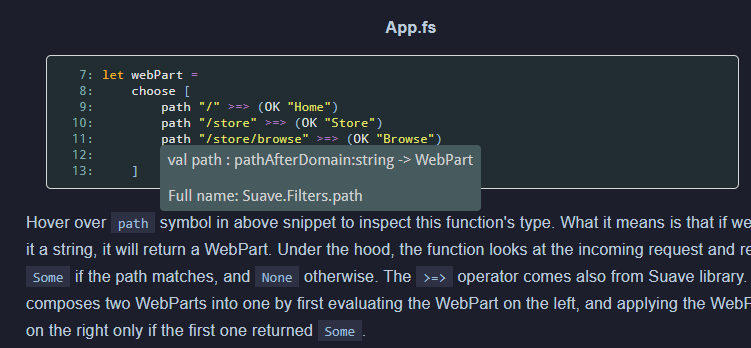

Suave Music Store Tutorial - 2nd version
In this entry, I'm introducing recently published version 2 of my Suave Music Store tutorial
I've shown little activity recently in OSS contributions. That's partly cuz I got married on May this year, so I had little to no spare time for auxialiry work. Now that I finally found some time, I've finalized what I've been working on for long before - 2nd version of Suave Music Store Tutorial.
New foundations + Acknowledgments
The second version includes a lot of changes, compared the original publication. By listing the changes, I'd also like to thank people from the F# community responsible for corresponding projects.
-
New versions of libraries:
- Suave 2.2.1 (thank you Henrik Feldt and Ademar Gonzalez for creating such a wonderful web lib)
- FSharp.Core 4.2.3 together with .NET SDK-based project (thanks go to Don Syme, Enrico Sada and Vasily Kirichenko for making that possible)
- SQLProvider 1.1.8 (thanks Ross McKinlay, Colin Bull and Tuomas Hietanen)
-
Tutorial is no longer Windows-based, meaning I did my best to provide x-plat tutorial for everyone:
- Visual Studio has been replaced with Visual Studio Code editor (note the
Codesuffix ;)), together with an awesome Ionide F# extension (Krzysztof Cieślak - dzięki!) - Paket + FAKE is used by default now, instead of VS-based NuGet and MsBuild solutions (thanks Steffen Forkmann and all Paket contributors)
- SQL Server has been replaced with Postgres (thanks to Chris Holt contribution)
- Visual Studio has been replaced with Visual Studio Code editor (note the
- Standard GitBook-formatted F# code snippets have been replaced with much nicer and richer FSharp.Formatting equivalent. In addition to that, the project allowed to render tooltips for every snippet. (thank you Tomas Petricek)
As you can see, multiple components of the tutorial exists thanks to effort of the awesome F# community - thank you all above and everyone I forgot to add.
How snippets work

To make things work, I used the orginal idea described in my previous post. I paid attention to the coment under that entry however and changed the way tutorial contents are maintained. You can read more on how the process works in the Contribution guideline on GitHub.
Next steps
I'm hoping this new solution will make it easier to update the tutorial in future. The build script is currently quite a mess, however I'd like to extract the core logic for processing the content and snippets into a separate library.
That would allow to create more F# tutorials for other library and tools in the ecosystem in a consistent way. Actually, that's one of my main goal on the list to create another tutorial like this - who knows, maybe SAFE stack will get its version soon?